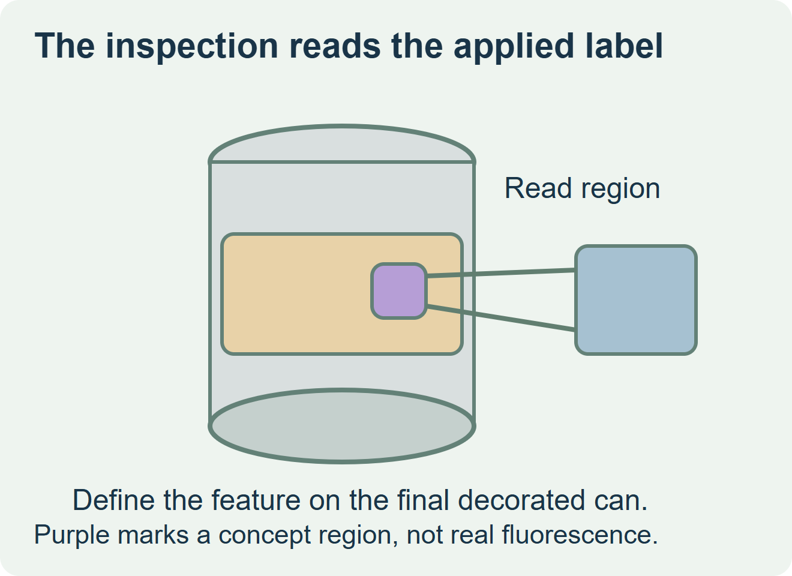
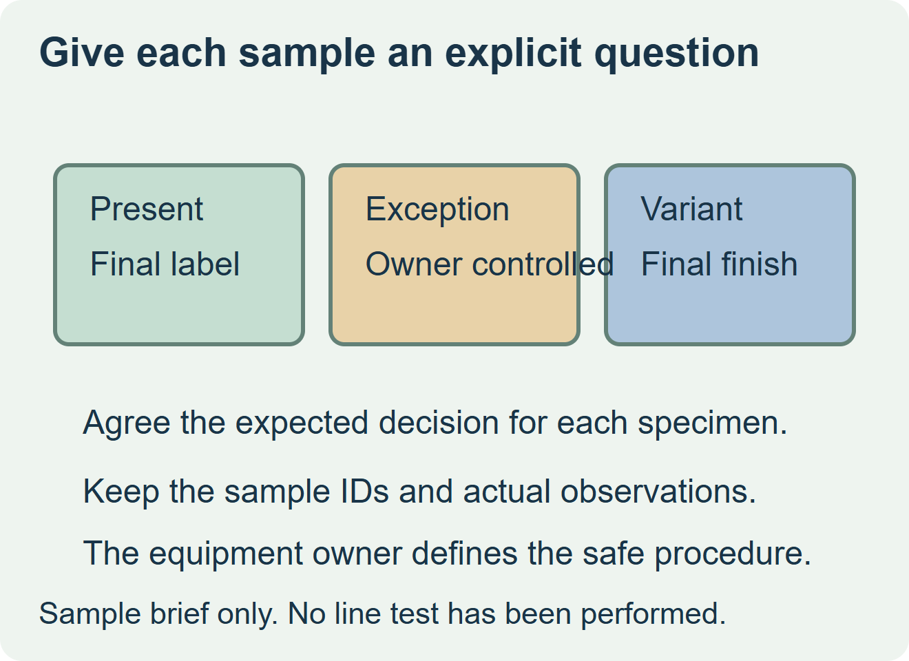

When the installed food-can line uses UV/luminescence inspection, specify the label feature that the system is meant to detect and obtain confirmation on the finished applied construction. A visually correct artwork proof or a successful web-gap signal does not approve that downstream check. If the signal requirement is unknown, keep the construction at sample stage with the line owner.


Identify the signal on the applied can
Ask whether the system expects a defined marking or another identified luminescent property in the label. Mark the intended region on the final label drawing and relate it to the view available after application. The label supplier needs the equipment owner’s actual requirement; do not add an arbitrary fluorescent patch and call it machine-ready.
Wenglor’s food-can application example uses luminescent label markings and conveyor-side sensors for a defined inspection arrangement. The example shows why the label and inspection system must be specified together. Its reported position and label-distinction functions belong to that arrangement, not to every sensor that detects a fluorescent response.
| Question to resolve | Evidence or input for the actual proposal | Do not infer |
|---|---|---|
| What provides the signal? | Identified label material or marking and the final construction | A clear or white appearance guarantees a compatible response. |
| Where is it read? | Marked label region, applied-can view and installed station | A web detector reads the same object after application. |
| Which variants are covered? | Relevant final artwork, finish and pack states accepted by the line owner | One SKU sample represents every decorated version. |
| What decision does the system make? | Confirmed presence, position or identity scope and its exception handling | One detected signal proves every inspection requirement. |


Trial the converted and applied construction
Have the equipment and quality owners define a safe acceptance demonstration using identified samples. Include the actual printed and finished label on the intended can. If an unlabelled or otherwise exceptional specimen is needed, it must be managed under the site’s approved procedure and kept outside saleable stock. This guide gives no teach-in, UV exposure, sensor-distance or reject-control instructions.
For a hypothetical canned-food range, two labels share a size but use different printed coverage. Keep both represented until the equipment owner accepts a justified grouping. A hand-applied blank material sample may help the supplier investigate the signal while leaving final graphics, finish, placement and line handling open.
Do not enlarge the meaning of a detected label
Presence asks whether the expected feature is detected. Correct SKU, full placement, readable copy and reliable removal of exceptions can require additional confirmed functions. Ask the line team which are actually provided. Fluorescence is an inspection input here; it is not proof of authenticity, food safety or resistance to interference.
Retain the label reference, final artwork/finish, can sample and represented station with the acceptance record. Review the affected signal requirement when the construction or relevant decorated region changes. If the proposed label cannot support the existing check, compare a supported material/marking or an equipment-owner-approved inspection alternative before committing to the production order. ZFU can review the printed-label component; inspection design and commissioning require their own confirmed supplier scope.
Discuss the unresolved label requirement
Send can and final label samples, marked signal region and construction, station/model and owner requirements, relevant SKU variants, handling and quantities. Review food label options and prepare a label specification inquiry. The contact page opens an email draft and lists email or WhatsApp for attachments. Supply, proof options, testing, pricing and timing require project confirmation.